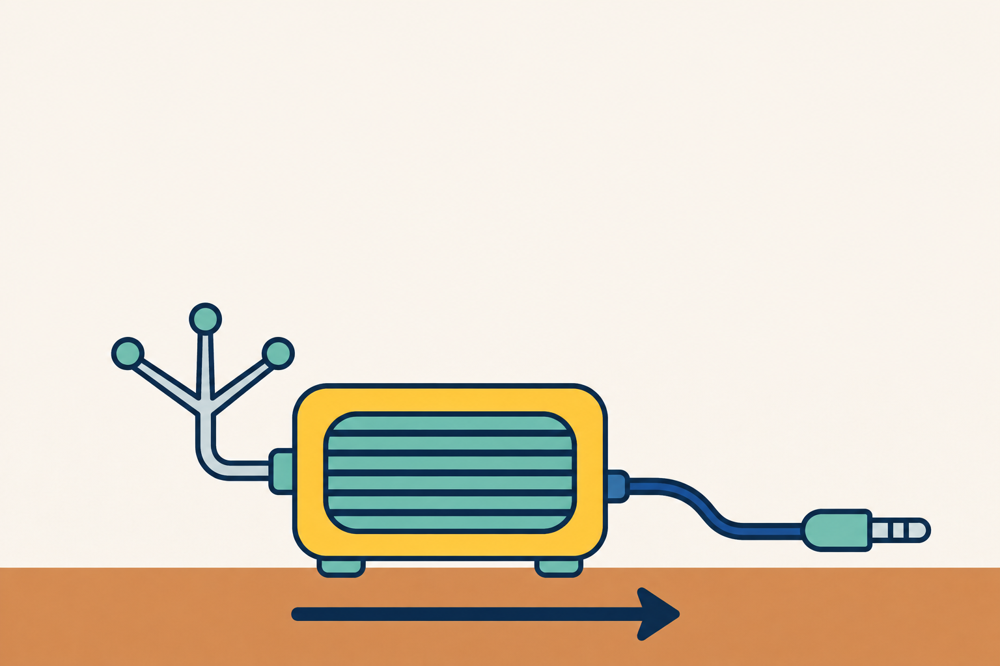
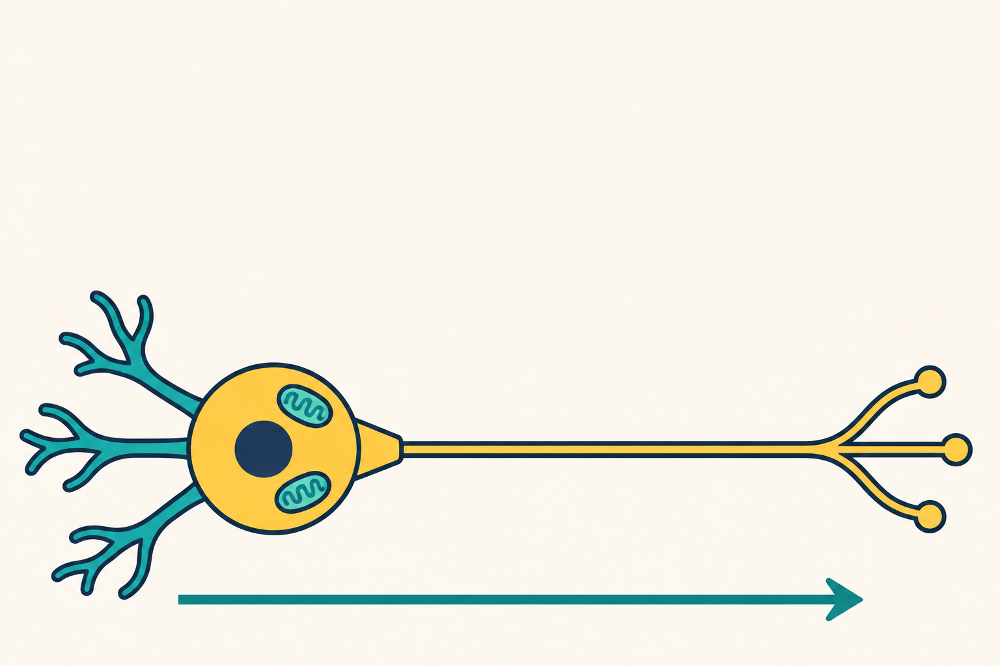
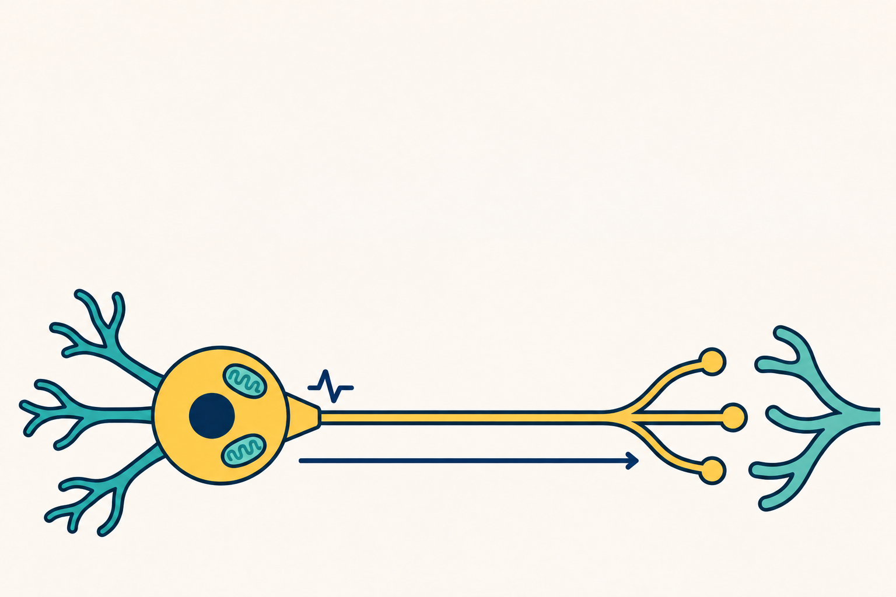
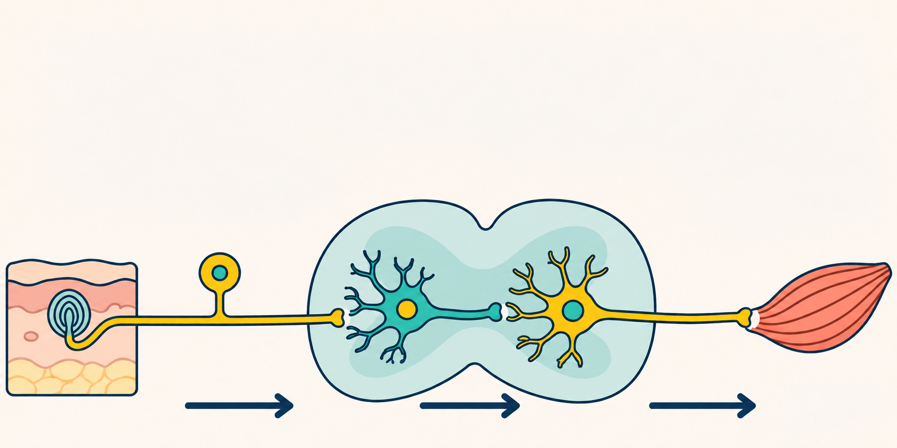

뉴런의 세 부분과 신호의 방향
받는 자리, 활동전위가 시작되는 자리, 넘겨주는 자리는 각각 어디일까요?
-
민서뉴런에서 소식을 받는 곳과 넘기는 곳은 어떻게 찾죠?
안내자안테나와 케이블 끝을 먼저 비교해 봐요.

1컷 받는 안테나 → 수신기 본체 → 내보내는 케이블 끝. 세 부분이 연결된 방향을 먼저 살펴봐요.
비유 연결 수신기의 가지형 안테나 → 입력을 받는 수상돌기(가지돌기) · 수신기 본체와 길게 뻗은 출력선 → 세포체와 축삭, 그리고 다음 세포로 신호를 넘기는 축삭말단
-
안내자가지돌기가 입력을 받고, 세포체를 거쳐 축삭 시작부에 전달해요.

2컷 수상돌기는 입력을 받아요. 흥분성 입력의 예에서는 막의 채널을 통해 Na⁺가 들어와요. 핵과 미토콘드리아는 세포체 안에 있어요.
여기까지의 비유예요 수신기는 세 부분의 연결과 방향을 보여 줍니다. 뉴런은 막의 이온 이동으로 전기적 신호를 만들어요.
-
민서받는 곳은 가지, 활동전위가 출발하는 곳은 축삭 시작부군요.

3컷 수업에서 축삭둔덕이라고 부른 축삭 시작부에서 활동전위가 생기고, 축삭을 따라 말단까지 전해져 다음 세포로 신호를 넘겨요.
-
민서구심성과 원심성의 기준은 어디예요?
안내자중추로 들어오면 구심성, 중추에서 근육으로 나가면 원심성이에요.

4컷 감각 → 구심성(afferent) 뉴런 → 연합뉴런 → 원심성(efferent) 뉴런 → 근육. 구심·원심의 중심은 중추신경계예요.
수상돌기에서 입력을 받아 세포체를 거쳐 축삭 시작부로 전달해요. 활동전위가 생기면 축삭을 따라 말단으로 전해져요. 감각에서 중추로 들어오는 쪽이 구심성, 중추에서 근육으로 나가는 쪽이 원심성이에요.
용어
- 수상돌기(dendrite)
- 가지돌기. 입력을 받는 부분으로, 흥분성 입력의 예에서는 채널이 열려 Na⁺가 들어와요.
- 축삭둔덕과 축삭말단
- 축삭둔덕은 세포체가 축삭으로 좁아지는 연결 부위예요. 강의에서는 활동전위가 시작되는 축삭 시작부를 축삭둔덕으로 설명해요. 축삭말단은 다음 세포에 신호를 넘기는 끝이에요.
- 감각·연합·운동뉴런
- 구심성 뉴런은 감각뉴런, 원심성 뉴런은 운동뉴런이에요. 둘 사이의 연합뉴런은 받은 정보를 통합해요.